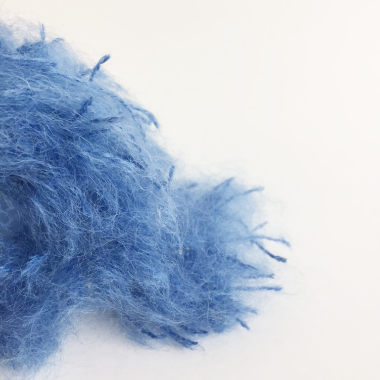
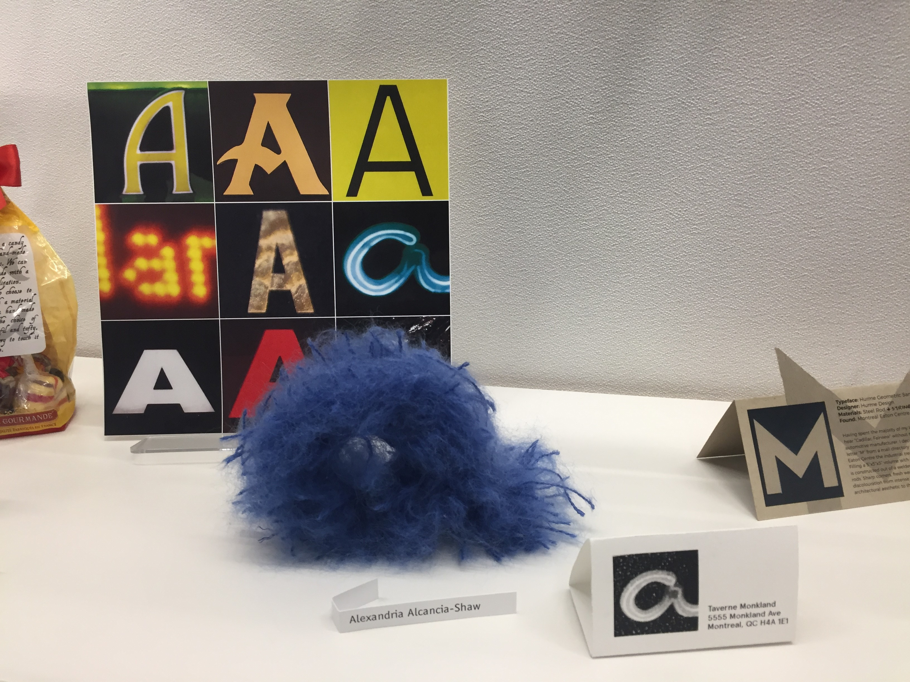
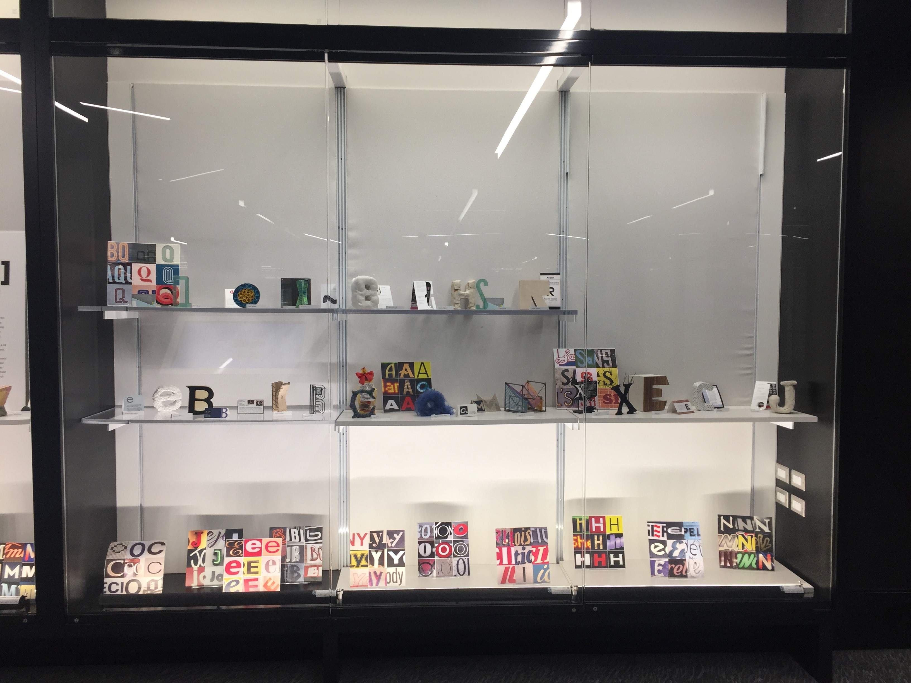
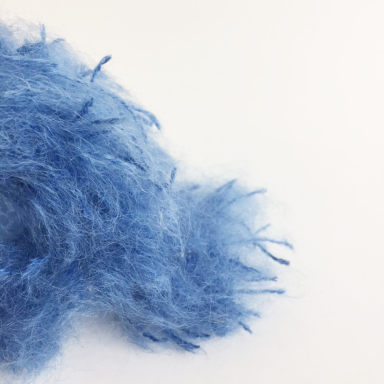
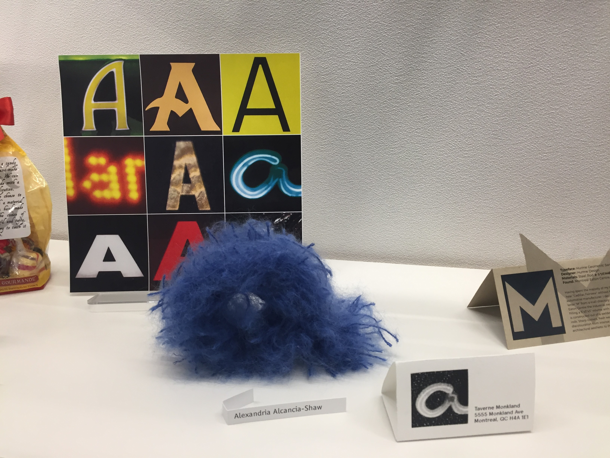
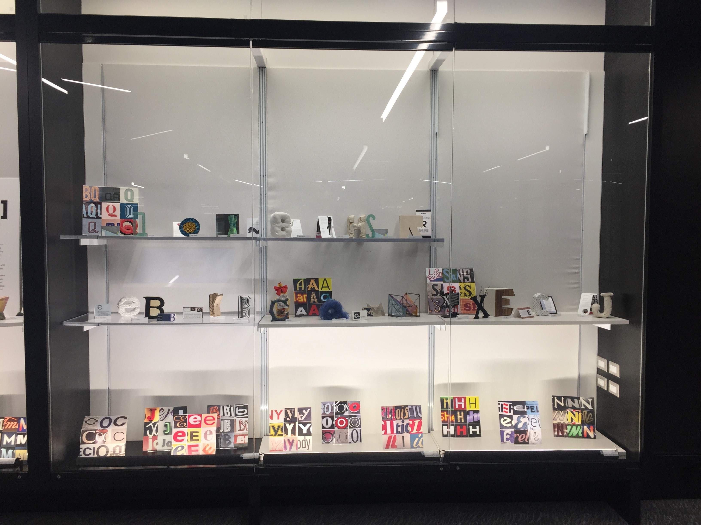

Fuzzy "a"
2018
3D woven typography
Fuzzy "a" is a hand latch-rug woven letter, made of a batch of recycled neon-blue mohair wool. The letter takes inspiration from the neon sign of "Taverne", a restaurant on Monkland Ave. in the Notre-Dame-de-Grâce neighbourhood of Montreal. The yarn was chosen for its ability to reflect and show off light, thus emulating the feeling of a neon sign without any use of electronics.
This piece was shown in the exhibition "Letterforms 3", shown in the Engineering and Visual Arts building of Concordia University, and the Webster Library.

 




